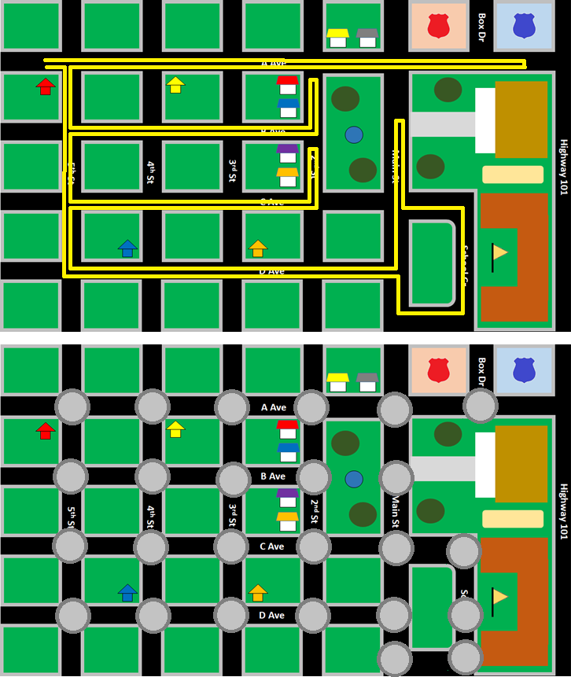

This kind of problem is a common task that many people have to do on the average weekend. It is common enough to have many places to visit on a vacation and a limited number of dollars and days to spend in these pursuits. The problem is so common that it even has a number of formal names, depending on what you value most in your answer. In general it is an optimization path problem because you are asked to create a path and that path must be set to maximize or minimize some value, whether it is gas usage or time.
In defining a path, the places you need to visit are important features. The exact tasks are
not important, but this is the list in case you want an easy reference. There are other places
that aren't named, but exist on your path and are implied in your trip. For example, there is
nothing on the corner of 3rd and C, but if you cross that intersection, it is a step in your
path. The image below shows first a silly path that no one would choose, but it is acceptable.
It also shows the places at each intersection as additional destinations. In path optimization
problems it is useful to consider a graph. A graph consists of nodes like these gray
circles and edges like the black road between them.

In the first path problem, you are allowed to pick any path you want without any expectations. This is known as an unconstrained solution. Nothing is forbidden. Even a ridiculous path like the one above is acceptable as long as it visits each place. Just based on your own experience at this task, you likely gave yourself more constraints than were actually given.
This is an optimization based on a form of cost. Costs can vary quite a lot, but time is faily common. Do it faster. Do it before some limit. Do it with as little time as possible. Part of the "science" of computer science is working on the theory of the problem. What is the theoretical minimum that a path could take?
This optimization by gas mileage is another form of cost optimization. In this case there is a resource that must be conserved. It could be gas in a car or battery power in your phone. At one time the amount of memory in a computer was very limited. Today that is so cheap a resource that no one really cares much. But with today's hand-held devices, batter power matters more than ever. If an algorithm wasted all your battery power, you might not like that very much.
This is a set of constraints that will affect how your algorithm develops. If you think of your path like a rubber band, these constraints put a pin firmly in the path at fixed points in time and space. You might stretch the band between those pins, but there will be limits to what you can do. There are only 60 minutes in an hour, after all is said and done. Some paths become infeasible, meaning that they aren't possible because of the constraints. If you have extra time and options between those pins, it is slack in the path.
This kind of optimization is also common. EfficiencyTraveling Salesman Problem. This problem is impossible to solve in the most efficient way possible. Anyone can do it with 3 stops, or 5. You don't have to get much past 5 stops before the path becomes unsolvable. You could work on one problem your whole life. No one wants to waste that much time so many solutions are approximations of the best problem with some unknown error. Such algorithms are called heuristics.